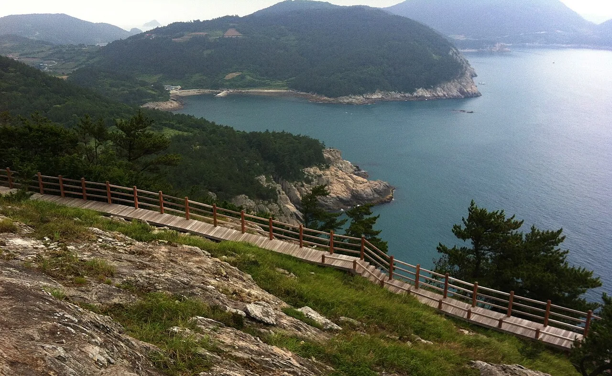
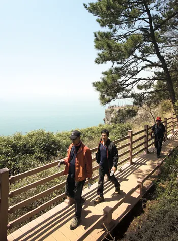
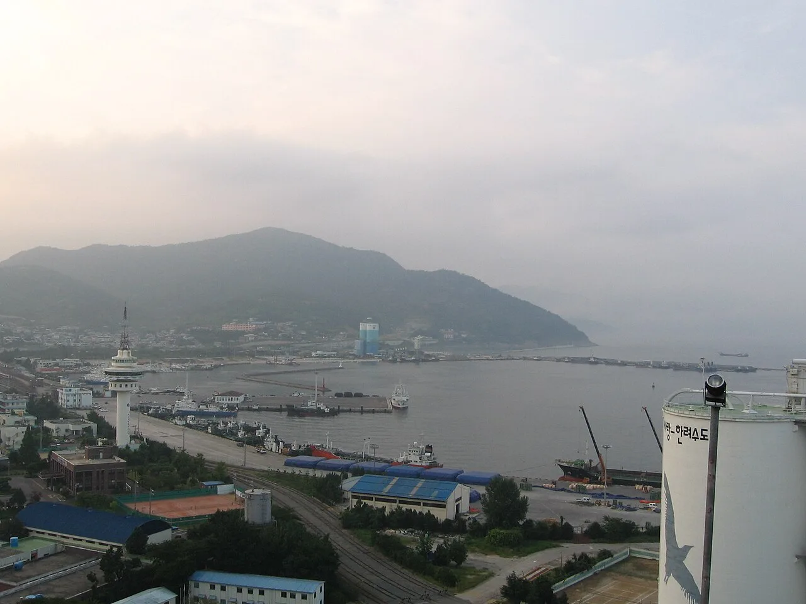
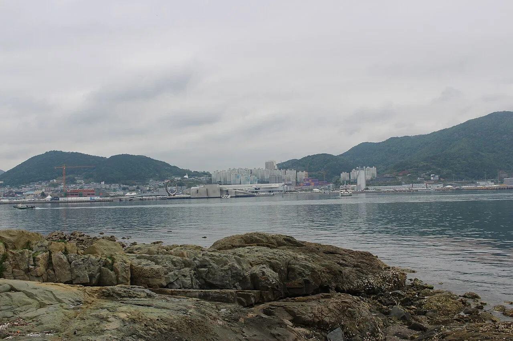
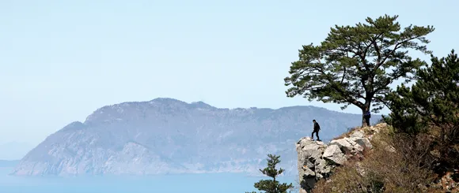

▲ 금오도 비렁길 절벽 구간의 데크길. 발밑으로 곧장 바다가 펼쳐진다
'비렁'은 표준어가 아니다. 벼랑(절벽)을 뜻하는 여수 지역 사투리다. 여수 앞바다에 떠 있는 섬 금오도의 해안을 따라 조성된 이 트레킹길에는 그래서 '비렁길'이라는 이름이 붙었다. 깎아지른 절벽 아래로 에메랄드빛 바다가 펼쳐지고, 절벽 위로는 동백숲과 전망대가 이어지는 총 18.5km의 해안길이다. 연간 40만 명 넘는 방문객이 찾는다는 이 길의 코스별 구간과 배편 정보를 정리했다.
미리 보기
- '비렁'은 벼랑의 여수 사투리, 금오도 해안절벽을 따라 이어진 트레킹길
- 총 18.5km, 5개 코스로 구성되며 전 코스 완주 시 약 8시간 30분 소요
- 1코스 함구미~두포가 가장 대중적, 용두바위·송광사절터 경유
- 여수항·신기항에서 배편 이용, 함구미항이 주 출발점
1. '비렁'은 벼랑이다 — 금오도 비렁길이란
금오도는 여수시 남면에 속한 섬으로, 조선시대에는 왕실 관을 만드는 데 쓰이던 황장목(금강송) 보호를 위해 일반인 출입이 금지됐던 곳이다. 이런 이력 덕분에 개발이 늦어지면서 오히려 해안 절벽과 숲이 원형에 가깝게 남았고, 이 절벽을 따라 걷는 길이 비렁길이라는 이름으로 조성됐다. 2012년 새 구간이 추가로 개설되며 지금의 5개 코스, 총 18.5km 체계를 갖췄다.

▲ 금오도 비렁길 데크 구간을 걷는 방문객들. 데크길 바로 옆이 절벽과 바다로 이어진다 사진=대한민국 정책브리핑(김형호)
길 이름에 '비렁'을 그대로 쓴 것은 여수시가 지역 정체성을 살리기 위한 선택이었다. 실제로 걸어보면 데크길 바로 옆이 곧장 절벽 아래 바다로 떨어지는 구간이 적지 않아, 이름이 과장이 아님을 체감하게 된다.
2. 코스별 거리·소요시간 — 5개 코스, 총 18.5km
| 코스 | 구간 | 거리 | 소요시간 | 특징 |
|---|---|---|---|---|
| 1코스 | 함구미 → 두포 | 5km | 약 2시간 | 용두바위, 송광사절터, 신선대 |
| 2코스 | 두포 → 직포 | 3.5km | 약 1시간 30분 | 굴등전망대, 촛대바위 |
| 3코스 | 직포 → 학동 | 3.5km | 약 2시간 | 동백숲 산길, 갈바람통·매봉전망대 |
| 4코스 | 학동 → 심포 | 3.2km | 약 1시간 30분 | 사다리통전망대, 출렁다리 |
| 5코스 | 심포 → 장지 | 3.3km | 약 1시간 30분 | 망산봉수대, 일몰 명소 |
전 코스를 이으면 총 18.5km, 완주에는 약 8시간 30분이 걸린다. 하루 만에 전 코스를 걷기보다는 1~2개 코스를 골라 반나절 일정으로 즐기는 방문객이 많다. 특히 1코스(함구미~두포)는 진입이 쉽고 볼거리가 다양해 처음 방문하는 사람에게 가장 많이 추천된다.
3. 배편 — 여수항·신기항에서 금오도 가는 법

▲ 여수항 일대 전경. 금오도로 가는 여객선이 오가는 출발점 중 하나다 ⓒ Wikimedia Commons
금오도는 여수 연안여객선터미널 또는 돌산도의 신기항에서 배편으로 접근할 수 있다. 여수 연안여객선터미널에서는 함구미항(비렁길 1코스 시작점, 약 1시간 30분)과 여천항(약 1시간)으로 각각 배가 다니며, 신기항에서는 약 25분이면 금오도에 닿아 상대적으로 가장 빠르다. 자가용으로 돌산도까지 이동한 뒤 신기항에서 배를 타는 방식도 그래서 많이 이용된다. 운항은 신아해운·한림해운 등이 맡고 있다.

▲ 여수항 일대와 오동도. 여수 시내 쪽에서 금오도로 향하는 여객선을 탈 수 있다 ⓒ Wikimedia Commons
여객선 시간표와 요금은 계절과 선사 사정에 따라 자주 바뀌므로, 방문 전 여수시 홈페이지나 해당 선사에 직접 확인하는 것이 안전하다. 특히 주말과 성수기에는 배편이 몰리는 만큼 예약을 미리 해두는 편이 좋다.
4. 초보자 코스 vs 종주 코스, 뭘 고를까

▲ 금오도 비렁길 전망 포인트에서 바라본 풍경. 절벽 끝 소나무 아래로 바다와 능선이 겹겹이 펼쳐진다 사진=대한민국 정책브리핑(김형호)
시간이 넉넉하지 않다면 1코스(함구미~두포, 5km·2시간) 하나만 걷고 돌아 나오는 일정도 충분히 만족스럽다. 용두바위와 송광사절터 등 주요 볼거리가 몰려 있고, 진입로 접근성도 가장 좋은 편이다. 체력에 자신이 있고 하루를 온전히 비울 수 있다면 5개 코스를 모두 잇는 종주도 가능하지만, 총 18.5km에 8시간 30분이 걸리는 만큼 이른 아침 출발과 충분한 휴식·물 준비가 필수다.
가족 단위 여행객이라면 굴등전망대와 촛대바위가 있는 2코스, 커플이나 사진 촬영이 목적이라면 출렁다리가 있는 4코스가 상대적으로 인기가 많은 편으로 알려져 있다.
5. 준비물과 안전 수칙
비렁길은 절벽을 따라 이어지는 만큼 대부분 구간에 데크길과 안전 난간이 설치돼 있지만, 여름철에는 그늘이 부족한 구간이 많아 양산·모자·자외선 차단제가 필수다. 코스 중간중간 마을이 있어 식수나 간단한 먹거리를 구할 수 있지만, 전체적으로 편의시설이 많지 않으므로 넉넉한 물과 간식을 미리 챙기는 편이 안전하다. 우천 시에는 데크길이 미끄러워질 수 있어 방문을 다시 고려하는 것이 좋다.
✅ 여수 금오도 비렁길, 가기 전 체크리스트
· '비렁'은 벼랑의 여수 사투리, 총 18.5km 해안절벽 트레킹 코스
· 5개 코스로 구성, 전 코스 완주 시 약 8시간 30분 소요
· 1코스(함구미~두포)가 접근성·볼거리 면에서 초보자에게 가장 추천됨
· 여수 연안여객선터미널 또는 신기항에서 함구미항 등으로 배편 이용
· 그늘이 적은 구간이 많아 자외선 대비와 충분한 물 준비 필요
· 여객선 시간표는 계절에 따라 바뀌므로 방문 전 재확인 권장